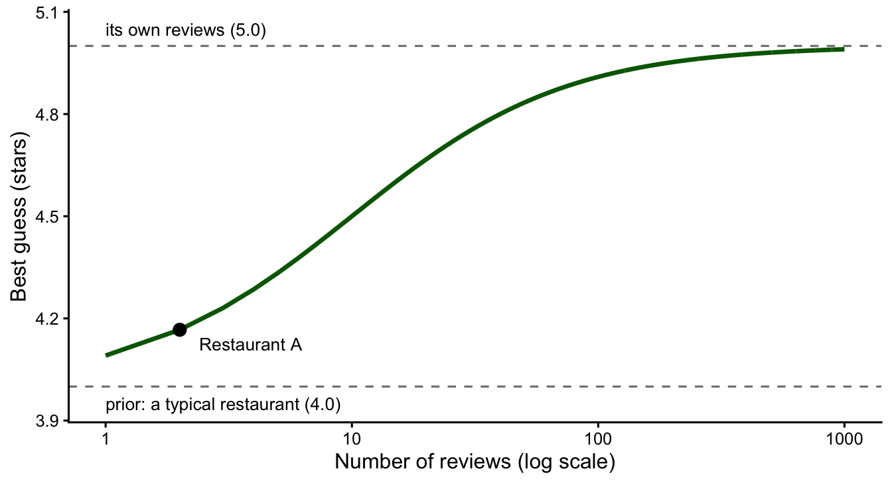
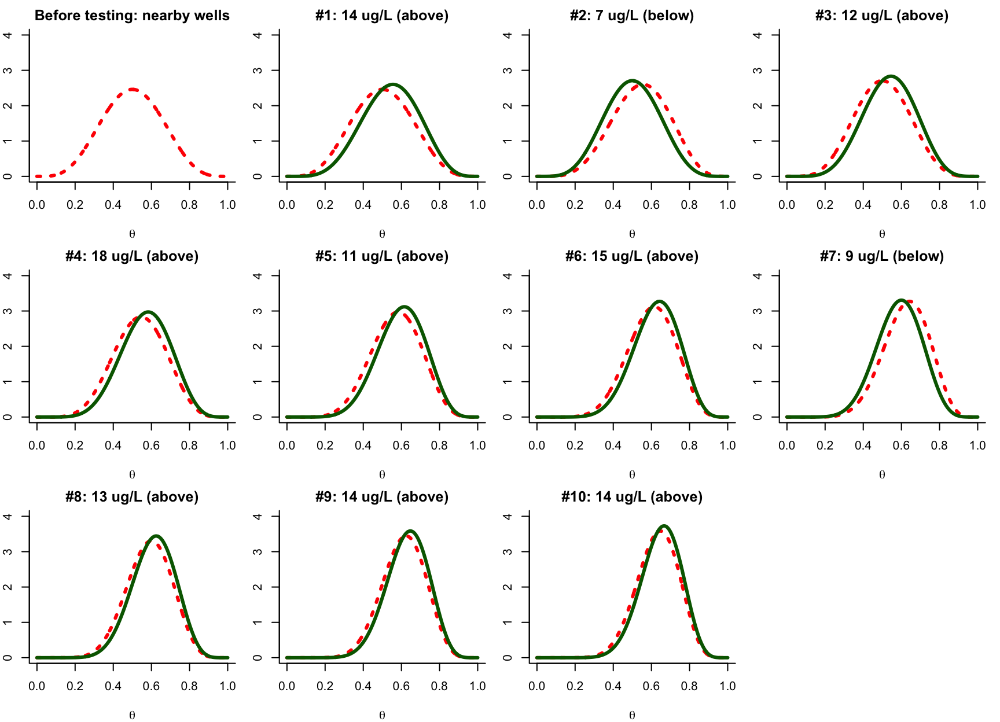
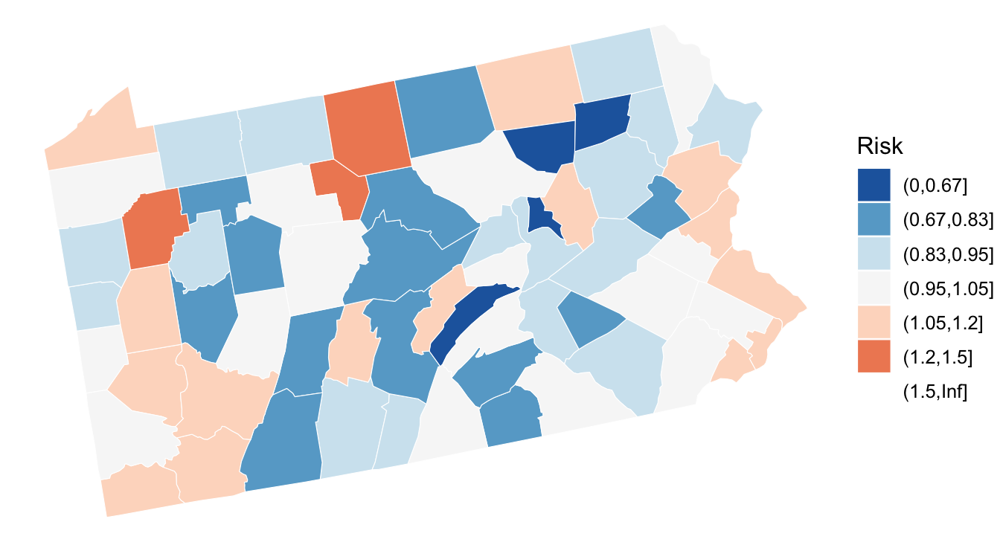
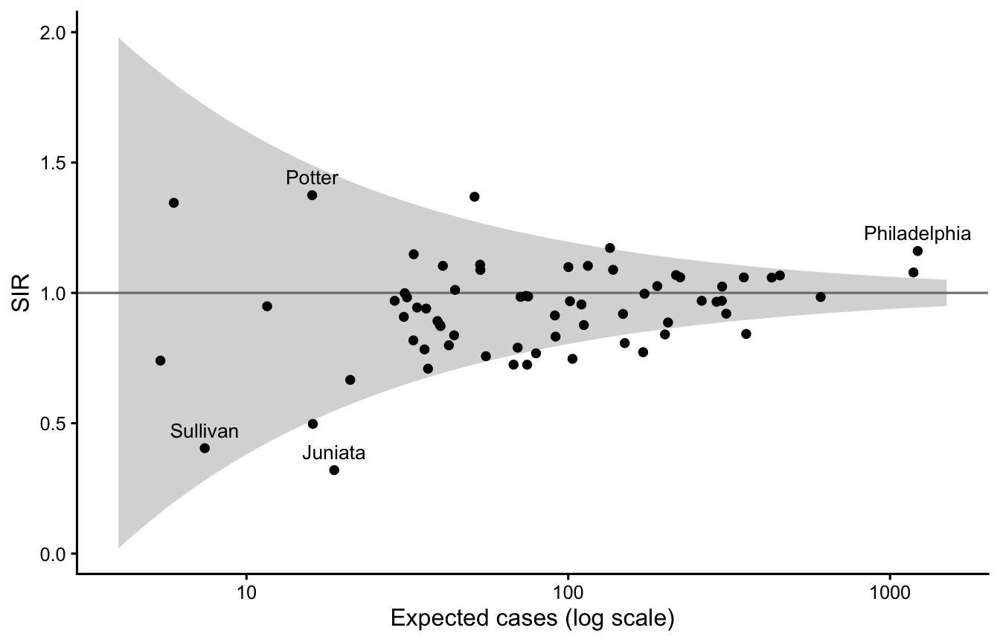
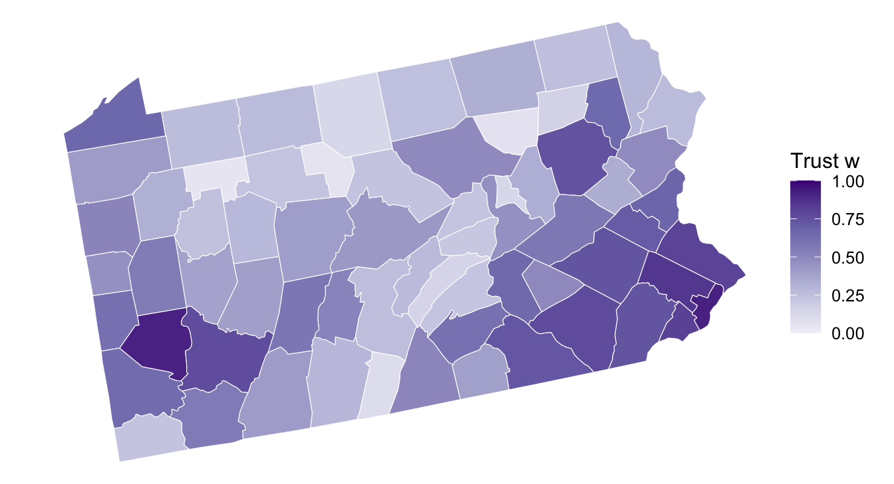
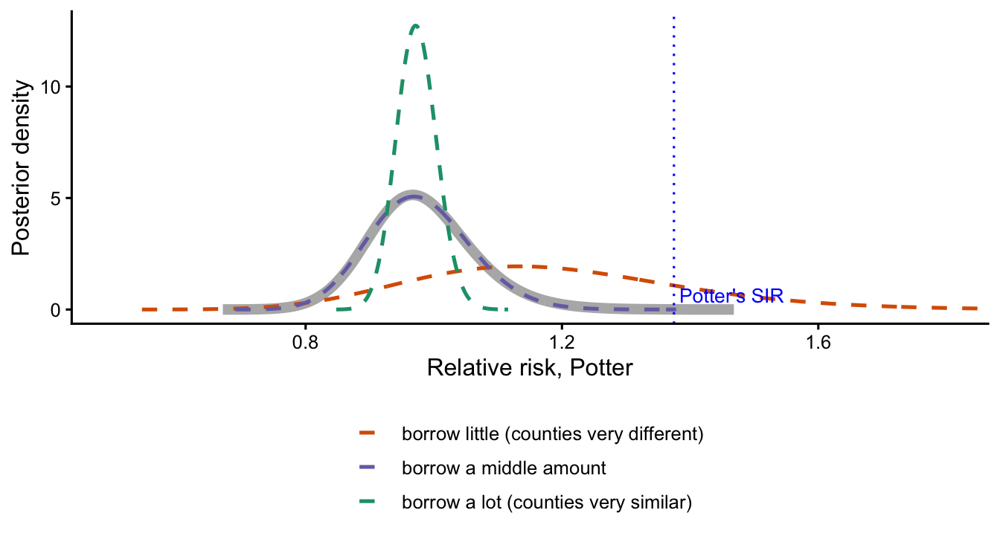
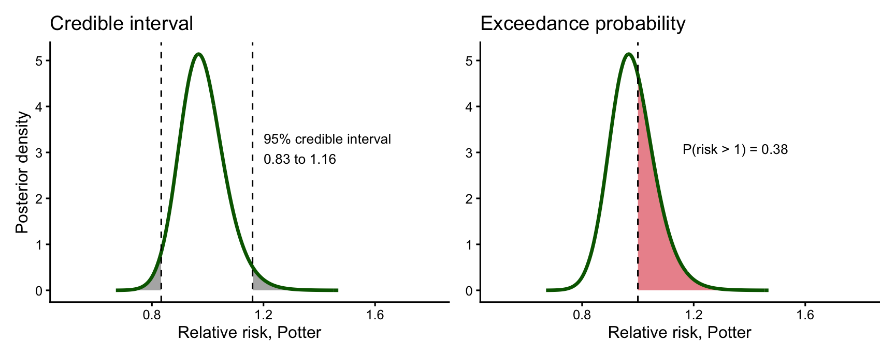
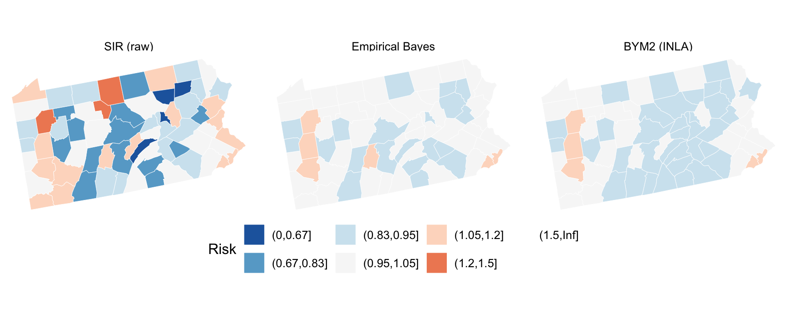
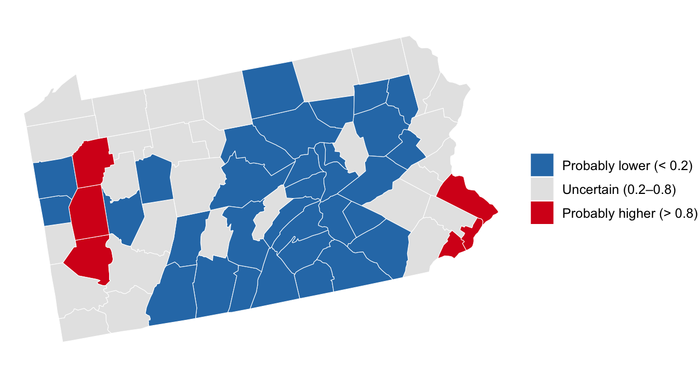

library(sf)
library(dplyr)
library(tidyr)
library(ggplot2)
library(patchwork)
library(spdep)
library(SpatialEpi) # pennLC
library(INLA)Bayesian Disease Mapping with R-INLA
How much should we trust a number?
Today
Some numbers rest on a lot of data, some on very little. Today we learn the Bayesian way of taking that into account, first with restaurants and a well, then with lung cancer in Pennsylvania. Reading: Moraga Ch. 3, 4 and §5.1–5.3.
NoteBy the end of today you can
- explain prior, data and posterior with an everyday example;
- explain why the SIR of a small county is unreliable;
- say what shrinkage does, and to which counties;
- read a smoothed map and an exceedance map made with R-INLA.
Warning
Install INLA before class. It is not on CRAN:
install.packages("INLA",
repos = c(getOption("repos"), INLA = "https://inla.r-inla-download.org/R/stable"))The Bayesian idea in one example
Two restaurants
| Number of reviews | Average rating | |
|---|---|---|
| Restaurant A | 2 | 5.0 ★ |
| Restaurant B | 800 | 4.7 ★ |
Which one would you pick? Most people pick B, even though A has the higher average: two five-star reviews could come from the owner’s friends. Without noticing, you did three things.
- You started from what you know about restaurants in general: a typical one gets about 4.0 stars. That is the prior.
- You looked at each restaurant’s own reviews. That is the data.
- You combined the two, trusting the reviews more when there are many. That is the posterior, your best guess.
The best guess is an average
Where does the prior come from? Recently, 10 people tried restaurants in the area, and their average rating was 4.0 stars. We borrow these 10 ratings and add them to each restaurant’s own reviews; the best guess is the average of all the ratings, borrowed and own. With \(n\) own reviews,
\[ \text{best guess} \;=\; \frac{\text{total stars}}{\text{total ratings}} \;=\; \frac{10 \times 4.0 \;+\; n \times \text{its average}}{10 + n}. \]
Two or three own reviews cannot overturn the 10 borrowed ratings; a few dozen can. The same best guess is a weighted average,
\[ \text{best guess} \;=\; w \times \text{its average} \;+\; (1 - w) \times 4.0, \qquad w = \frac{n}{n + 10}, \]
where \(w\) is the share of its own reviews: how much we trust its own reviews, between 0 and 1. In R:
Code
best_guess <- function(reviews, average, prior_mean = 4.0, borrowed = 10) {
w <- reviews / (reviews + borrowed) # share of its own reviews
w * average + (1 - w) * prior_mean # weighted average
}
best_guess(reviews = 2, average = 5.0) # Restaurant A[1] 4.166667Code
best_guess(reviews = 800, average = 4.7) # Restaurant B[1] 4.691358Restaurant A’s 5.0 is pulled back to 4.17: two reviews are not enough to convince us. B barely moves, to 4.69. Pulling an estimate toward the average is called shrinkage.
More reviews, less shrinkage
What if A kept getting five-star reviews?
Code
tibble(reviews = c(1, 2, 5, 10, 50, 100, 800)) |>
mutate(w = round(reviews / (reviews + 10), 2), # share of its own reviews
best_guess = round(best_guess(reviews, 5.0), 2))# A tibble: 7 × 3
reviews w best_guess
<dbl> <dbl> <dbl>
1 1 0.09 4.09
2 2 0.17 4.17
3 5 0.33 4.33
4 10 0.5 4.5
5 50 0.83 4.83
6 100 0.91 4.91
7 800 0.99 4.99Code
tibble(reviews = 1:1000) |>
mutate(guess = best_guess(reviews, 5.0)) |>
ggplot(aes(reviews, guess)) +
geom_hline(yintercept = c(4, 5), linetype = 2, colour = "grey50") +
annotate("text", x = 1, y = c(3.95, 5.05), hjust = 0, size = 3.5,
label = c("prior: a typical restaurant (4.0)", "its own reviews (5.0)")) +
geom_line(linewidth = 1.2, colour = "darkgreen") +
geom_point(data = tibble(reviews = 2, guess = best_guess(2, 5.0)), size = 3) +
annotate("text", x = 2.4, y = best_guess(2, 5.0), label = "Restaurant A",
hjust = 0, vjust = 1.6, size = 3.5) +
scale_x_log10() +
labs(x = "Number of reviews (log scale)", y = "Best guess (stars)") +
theme_classic(base_size = 12)
With 2 reviews, the guess stays close to the prior. With 10 own reviews, as many as the borrowed ones, it sits exactly halfway. With hundreds, the prior hardly matters.
TipKey idea
The posterior is a compromise between the prior and the data. The more data, the more the data win.
Learning one test at a time: is the well water safe?
The story
A family tests its well for arsenic ten times. The EPA limit is 10 µg/L. Their question: how often is this water above the limit? Call that share \(\theta\): \(\theta = 0.2\) means unsafe one test in five.
Code
epa <- 10 # EPA limit, µg/L
conc <- c(14, 7, 12, 18, 11, 15, 9, 13, 14, 14) # 10 tests (illustrative)
above <- as.integer(conc > epa) # 1 = above, 0 = below
above [1] 1 0 1 1 1 1 0 1 1 1We do not start from nothing. In nearby wells, about half of past tests were above the limit: 5 of 10. That is our prior, centred on \(\theta = 0.5\). A Beta curve keeps the score: Beta(5, 5) means 10 tests borrowed from the neighbours, 5 above and 5 below. Each new test above the limit adds 1 to the first number, each test below adds 1 to the second.
Watching the posterior learn
In each panel, red dotted is what we believed before the test, green is what we believe after.
Code
plot_update <- function(a, b, x, n, title = "") {
theta <- seq(0, 1, 0.001)
plot(theta, dbeta(theta, a, b), type = "l", lty = 3, lwd = 3, col = "red",
ylim = c(0, 4), bty = "l", xlab = expression(theta), ylab = "",
main = title) # before
if (n > 0) # no test, no update
lines(theta, dbeta(theta, a + x, b + n - x), lwd = 3, col = "darkgreen") # after
}Code
par(mfrow = c(3, 4), mar = c(4, 2, 2, 1))
a <- 5; b <- 5 # prior: 5 of 10 above in nearby wells
plot_update(a, b, 0, 0, title = "Before testing: nearby wells")
for (i in 1:10) {
plot_update(a, b, above[i], 1,
title = paste0("#", i, ": ", conc[i], " ug/L",
ifelse(above[i] == 1, " (above)", " (below)")))
a <- a + above[i] # after ...
b <- b + 1 - above[i] # ... becomes next before
}
Three things to notice:
- A test above the limit pushes the curve right; a test below pushes it left (tests 2 and 7).
- The curve gets taller and narrower: more tests, more certainty.
- Each panel’s green curve becomes the next panel’s red curve. That is Bayesian learning.
Note
Why does the y-axis stop at 4? It shows a density, not a probability, so it can exceed 1; the area under each curve is 1. We fix it at 4 so the panels can be compared.
What do we know after ten tests?
Code
a / (a + b) # best guess for θ[1] 0.65Code
qbeta(c(0.025, 0.975), a, b) # 95% credible interval[1] 0.4344984 0.8371141Code
1 - pbeta(0.5, a, b) # P(unsafe more than half the time)[1] 0.9164658Our best guess is that the water is above the limit about 65% of the time, and with 95% probability between 43% and 84% (the credible interval). The probability that it is unsafe more than half the time is 0.92. Bayesian results answer the family’s question directly, as a probability.
Where does 65% come from? The well’s own tests say 8 of 10, 80%. The nearby wells say 50%. The 10 borrowed tests and the well’s own 10 count equally, so the answer sits halfway. It is the restaurant formula again:
\[ 0.65 \;=\; w \times 0.80 \;+\; (1 - w) \times 0.50, \qquad w = \frac{10}{10 + 10} = 0.5. \]
TipKey idea
We start from what we already know, here the nearby wells, and each new test updates it. More data, a narrower curve, more certainty.
Counties: why small counties need help
The data
We rebuild the Pennsylvania lung cancer counts from the SIR lecture: \(O\) observed cases, \(E\) expected cases, and SIR \(= O/E\).
Code
data(pennLC)
d <- pennLC$data
ref <- d |>
group_by(race, gender, age) |>
summarise(r = sum(cases) / sum(population), .groups = "drop") # reference rates
county <- d |>
left_join(ref, by = c("race", "gender", "age")) |>
group_by(county) |>
summarise(O = sum(cases), E = sum(population * r), .groups = "drop") |>
mutate(county = as.character(county), SIR = O / E)
pa <- st_as_sf(pennLC$spatial.polygon) |>
st_set_crs(4326) |>
mutate(county = names(pennLC$spatial.polygon)) |>
st_transform(5070) |> # Albers
left_join(county, by = "county")
sir_breaks <- c(0, 0.67, 0.83, 0.95, 1.05, 1.2, 1.5, Inf)
sir_fill <- scale_fill_brewer(palette = "RdBu", direction = -1, drop = FALSE, name = "Risk")The SIR map
Code
ggplot(pa) +
geom_sf(aes(fill = cut(SIR, sir_breaks)), colour = "white", linewidth = 0.2) +
sir_fill +
theme_void(base_size = 12)
Which counties have the most extreme SIRs?
Code
extremes <- county |>
arrange(SIR) |>
slice(c(1:3, 65:67)) |> # 3 lowest, 3 highest
mutate(E = round(E, 1), SIR = round(SIR, 2))
extremes# A tibble: 6 × 4
county O E SIR
<chr> <int> <dbl> <dbl>
1 juniata 6 18.7 0.32
2 sullivan 3 7.4 0.4
3 montour 8 16.1 0.5
4 cameron 8 5.9 1.35
5 venango 70 51.1 1.37
6 potter 22 16 1.37Of these six counties, 5 expect fewer than 20 cases; the median county expects 75. A few cases more or less move their SIR a lot. Small counties are like restaurants with two reviews.
The funnel plot
How far can an SIR stray by chance alone? If a county’s true risk were exactly the state’s, its SIR would still fall, about 95% of the time, within \(1 \pm 1.96/\sqrt{E}\). Plotted against \(E\), that range is a funnel.
Code
funnel <- tibble(E = exp(seq(log(4), log(1500), length.out = 200))) |>
mutate(lo = 1 - 1.96 / sqrt(E), # chance range of the SIR
hi = 1 + 1.96 / sqrt(E))
labelled <- filter(county, county %in% c("sullivan", "potter", "juniata", "philadelphia"))
ggplot() +
geom_ribbon(data = funnel, aes(E, ymin = lo, ymax = hi), fill = "grey85") +
geom_hline(yintercept = 1, colour = "grey50") +
geom_point(data = county, aes(E, SIR)) +
geom_text(data = labelled, aes(E, SIR, label = tools::toTitleCase(county)),
nudge_y = 0.07, size = 3.5) +
scale_x_log10() +
labs(x = "Expected cases (log scale)", y = "SIR") +
theme_classic(base_size = 12)
The funnel is wide on the left. Potter’s 1.37 and Sullivan’s 0.40 sit inside it: they could be chance. Philadelphia’s 1.16 is far outside: with more than 1,200 expected cases, a 16% excess is not chance.
ImportantThe problem in one sentence
A raw SIR mixes real differences in risk with chance, and chance is largest in small counties.
Shrinkage: the restaurant formula for counties
Same formula, new names
| Restaurants | Counties |
|---|---|
| number of reviews | expected cases \(E\) |
| its average rating | its SIR |
| a typical restaurant, 4.0 | the state average, 1 |
| 10 borrowed ratings, average 4.0 | \(k\) borrowed expected cases at the state rate |
| trust in its own reviews, \(w\) | trust in its own SIR, \(w\) |
So each county gets
\[ \text{estimate} \;=\; w \times \text{SIR} \;+\; (1 - w) \times 1, \qquad w = \frac{E}{E + k}. \]
A big county (large \(E\)) keeps its SIR. A small county borrows from the state.
Who decides \(k\)? The data
For the restaurants we picked 10 ourselves. For counties, R estimates \(k\) from the 67 SIRs:
- if counties differ much more than chance alone would produce, real differences are large, we trust each county’s SIR, and \(k\) is small;
- if counties differ about as much as chance would produce, we trust the state average more, and \(k\) is large.
Letting the data choose the prior this way is called empirical Bayes (Clayton and Kaldor 1987; Marshall 1991). EBest() in spdep does it in one line.
Code
eb <- EBest(pa$O, pa$E) # cases, expected cases
pa$RR_eb <- eb$estmm # shrunk estimate
k <- with(attr(eb, "parameters"), b / a) # k borrowed expected cases
k[1] 107.908Code
pa$w <- pa$E / (pa$E + k) # trust in own SIREach county borrows about 108 expected cases at the state rate. Here are five counties, from small to large:
Code
pa |>
st_drop_geometry() |>
filter(county %in% c("sullivan", "potter", "venango", "lehigh", "philadelphia")) |>
arrange(E) |>
transmute(county, E = round(E), SIR = round(SIR, 2),
w = round(w, 2), estimate = round(RR_eb, 2)) county E SIR w estimate
1 sullivan 7 0.40 0.06 0.96
2 potter 16 1.37 0.13 1.05
3 venango 51 1.37 0.32 1.12
4 lehigh 260 0.97 0.71 0.98
5 philadelphia 1219 1.16 0.92 1.15Sullivan’s own 7 expected cases are mixed with 108 borrowed ones: we trust its SIR only 6%, and its estimate is almost the state’s. Philadelphia, with more than 1,200 expected cases, keeps 92% of its SIR. Potter and Venango have the same SIR, 1.37, like two restaurants with the same average, but Venango rests on three times more cases, so it stays higher: 1.12 against 1.05.
Where do we borrow?
Code
ggplot(pa) +
geom_sf(aes(fill = w), colour = "white", linewidth = 0.2) +
scale_fill_distiller(palette = "Purples", direction = 1, limits = c(0, 1),
name = "Trust w") +
theme_void(base_size = 12)
The map of \(w\) is a map of population: the rural north and centre borrow the most, the Philadelphia and Pittsburgh areas the least.
TipKey idea
Small counties borrow from the state; big counties keep their own SIR. The data decide how much to borrow.
Full Bayes with R-INLA
Empirical Bayes gives one number per county. A full Bayesian model does the same shrinkage but returns a whole posterior curve per county, like the green curves of the well. That tells us how sure we are. INLA is a fast way to fit such models (Moraga Ch. 3–4).
We use the BYM2 model (Moraga §5.3). Instead of borrowing from the whole state, each county borrows mostly from its neighbours, the way the family borrowed from nearby wells. We use the queen neighbours from the Moran’s I lecture.
Code
dat <- st_drop_geometry(pa) |>
mutate(id = row_number()) # one index per county
nb <- poly2nb(pa, queen = TRUE) # queen neighbours
nb2INLA("pa.adj", nb) # write for INLA
g <- inla.read.graph("pa.adj")
m2 <- inla(O ~ 1 + f(id, model = "bym2", graph = g),
family = "poisson", E = E, data = dat,
control.predictor = list(compute = TRUE),
control.compute = list(return.marginals.predictor = TRUE))
dat$RR_bym2 <- m2$summary.fitted.values$mean # posterior mean riskRead the formula as: log-risk = an overall level + a bump for each county that borrows from its neighbours (Moraga §4.1).
How does INLA get a credible interval?
For every county, INLA returns a whole posterior curve for its relative risk, like the green curves of the well. For the well, a simple formula gave the curve. Here it cannot, because each county borrows from its neighbours, and we do not know how much to borrow: that depends on how different the counties really are, which is itself unknown. INLA works in three steps (Moraga §3.2):
- Try several amounts of borrowing. For each plausible value of how much the counties differ, it computes the county’s curve with a fast bell-shaped (Laplace) approximation.
- Average the curves. It weights each curve by how well that amount of borrowing fits all 67 counties, and averages them. This is the integrated in INLA.
- Read the final curve. The posterior mean is its balance point; the 95% credible interval cuts 2.5% of the area off each side; the exceedance probability is the area to the right of 1.
Here are steps 1 and 2 for Potter. Each dashed curve fixes one amount of borrowing, from little to a lot; the thick grey curve is INLA’s final curve.
Code
k <- which(dat$county == "potter")
tau <- c(10, m2$summary.hyperpar["Precision for id", "0.5quant"], 1000) # little, middle, a lot
phi <- m2$summary.hyperpar["Phi for id", "0.5quant"]
fixed_fit <- function(t) { # BYM2 with borrowing fixed
hyp <- list(prec = list(initial = log(t), fixed = TRUE),
phi = list(initial = qlogis(phi), fixed = TRUE))
m <- inla(O ~ 1 + f(id, model = "bym2", graph = g, hyper = hyp),
family = "poisson", E = E, data = dat,
control.predictor = list(compute = TRUE),
control.compute = list(return.marginals.predictor = TRUE))
inla.smarginal(m$marginals.fitted.values[[k]]) # Potter's curve
}
lab <- c("borrow little (counties very different)", "borrow a middle amount",
"borrow a lot (counties very similar)")
steps <- bind_rows(lapply(1:3, function(j) data.frame(fixed_fit(tau[j]), curve = lab[j]))) |>
mutate(curve = factor(curve, lab))
final <- data.frame(inla.smarginal(m2$marginals.fitted.values[[k]]))
ggplot() +
geom_line(data = final, aes(x, y), linewidth = 2.5, alpha = 0.35) + # final curve, underneath
geom_line(data = steps, aes(x, y, colour = curve), linetype = 2, linewidth = 0.9) +
geom_vline(xintercept = dat$SIR[k], linetype = 3, colour = "blue") +
annotate("text", x = dat$SIR[k], y = 0, label = " Potter's SIR", hjust = 0,
vjust = -0.5, colour = "blue", size = 3.5) +
scale_colour_manual(values = c("#D95F02", "#7570B3", "#1B9E77"), name = NULL) +
coord_cartesian(xlim = c(0.5, 1.8)) +
labs(x = "Relative risk, Potter", y = "Posterior density") +
theme_classic(base_size = 12) +
theme(legend.position = "bottom", legend.direction = "vertical")
Borrowing little leaves Potter closer to its own SIR, with a wide curve; borrowing a lot pulls it toward its neighbours, with a narrow curve. The data make the middle amount the most plausible, so the final curve sits close to it. Step 3 then reads the answers off the final curve:
Code
LL <- m2$summary.fitted.values$`0.025quant`[k]
UL <- m2$summary.fitted.values$`0.975quant`[k]
P1 <- 1 - inla.pmarginal(1, m2$marginals.fitted.values[[k]])
p_ci <- ggplot(final, aes(x, y)) +
geom_area(data = filter(final, x <= LL), fill = "grey70") +
geom_area(data = filter(final, x >= UL), fill = "grey70") +
geom_line(colour = "darkgreen", linewidth = 1.2) +
geom_vline(xintercept = c(LL, UL), linetype = 2) +
annotate("text", x = UL + 0.04, y = max(final$y) * 0.6, size = 3.5, hjust = 0,
label = paste0("95% credible interval\n", sprintf("%.2f", LL),
" to ", sprintf("%.2f", UL))) +
coord_cartesian(xlim = c(0.5, 1.8)) +
labs(title = "Credible interval", x = "Relative risk, Potter", y = "Posterior density") +
theme_classic(base_size = 12)
p_exc <- ggplot(final, aes(x, y)) +
geom_area(data = filter(final, x >= 1), fill = "#d7191c", alpha = 0.5) +
geom_line(colour = "darkgreen", linewidth = 1.2) +
geom_vline(xintercept = 1, linetype = 2) +
annotate("text", x = 1.35, y = max(final$y) * 0.6, size = 3.5,
label = paste0("P(risk > 1) = ", sprintf("%.2f", P1))) +
coord_cartesian(xlim = c(0.5, 1.8)) +
labs(title = "Exceedance probability", x = "Relative risk, Potter", y = NULL) +
theme_classic(base_size = 12)
p_ci + p_exc
In R, the same numbers come straight from the curve:
Code
marg <- m2$marginals.fitted.values[[k]] # Potter's posterior curve
inla.qmarginal(c(0.025, 0.975), marg) # 95% credible interval[1] 0.8333901 1.1602932Code
1 - inla.pmarginal(1, marg) # P(risk > 1)[1] 0.3835876Three maps
Code
pa |>
select(county) |>
left_join(select(dat, county, SIR, RR_eb, RR_bym2), by = "county") |>
pivot_longer(c(SIR, RR_eb, RR_bym2), names_to = "estimate", values_to = "risk") |>
mutate(estimate = factor(estimate, c("SIR", "RR_eb", "RR_bym2"),
c("SIR (raw)", "Empirical Bayes", "BYM2 (INLA)"))) |>
ggplot() +
geom_sf(aes(fill = cut(risk, sir_breaks)), colour = "white", linewidth = 0.15) +
facet_wrap(~ estimate) +
sir_fill +
theme_void(base_size = 12) +
theme(legend.position = "bottom")
The extreme colours of the raw map, mostly small rural counties, fade. What remains is the broad pattern.
How sure are we? The exceedance map
For the well we asked: how likely is it that the water is unsafe more than half the time? For each county we ask: how likely is it that its risk is above the state average, \(P(\theta > 1)\)? This is the exceedance probability. It is the red area of the figure above, computed for every county.
Code
dat$p_exc <- sapply(m2$marginals.fitted.values,
function(m) 1 - inla.pmarginal(1, m)) # P(θ > 1)Code
exc_cols <- c("Probably lower (< 0.2)" = "#2c7bb6",
"Uncertain (0.2–0.8)" = "grey90",
"Probably higher (> 0.8)" = "#d7191c")
pa |>
select(county) |>
left_join(select(dat, county, p_exc), by = "county") |>
mutate(exc = cut(p_exc, c(0, 0.2, 0.8, 1), labels = names(exc_cols),
include.lowest = TRUE)) |>
ggplot() +
geom_sf(aes(fill = exc), colour = "white", linewidth = 0.2) +
scale_fill_manual(values = exc_cols, drop = FALSE, name = NULL) +
theme_void(base_size = 12)
Counties probably above average: Allegheny, Bucks, Butler, Delaware, Philadelphia, Venango. Potter, despite its SIR of 1.37, is not among them (\(P = 0.38\)): 22 cases are not enough.
TipKey idea
INLA does the same shrinkage, borrows from the neighbours, and tells us how sure we are about each county.
In-class exercise
Work in pairs, 15 minutes.
- Restaurants. Suppose 100 people, not 10, had tried restaurants in the area. Run
best_guess(2, 5.0, borrowed = 100)andbest_guess(800, 4.7, borrowed = 100). What happens to A and to B? Why? - Well water. Suppose the family knew nothing about nearby wells and started from a flat prior,
a <- 1; b <- 1. Rerun the updating. How does the final best guess change, and why? - Funnel. Cameron County has an SIR of 1.35 with only 6 expected cases. Is it inside the funnel? What is its empirical Bayes estimate,
pa$RR_eb[pa$county == "cameron"]? Explain the difference. - Interpretation. In two sentences for a county health officer, explain why Potter is not flagged even though its SIR is 1.37.
Key takeaways
- The posterior is a compromise between the prior and the data; the more data, the more the data win.
- A raw SIR mixes real differences and chance; chance is largest in small counties.
- Shrinkage: small counties borrow from the state (or their neighbours), big counties keep their SIR.
- Report how sure we are, not only the estimate: exceedance probabilities.
Words to know
| Word | Plain meaning |
|---|---|
| Prior | what we believe before seeing the data |
| Likelihood | what the data say |
| Posterior | what we believe after seeing the data |
| Credible interval | a range that contains the true value with 95% probability |
| Shrinkage | pulling unreliable estimates toward an average |
| Empirical Bayes | shrinkage where the data decide how much to shrink |
| Exceedance probability | the probability that a risk is above a threshold, e.g. the state average |
References
Clayton, D., & Kaldor, J. (1987). Empirical Bayes estimates of age-standardized relative risks for use in disease mapping. Biometrics, 43(3), 671–681.
Marshall, R. J. (1991). Mapping disease and mortality rates using empirical Bayes estimators. Journal of the Royal Statistical Society: Series C (Applied Statistics), 40(2), 283–294.
Moraga, P. (2019). Geospatial health data: Modeling and visualization with R-INLA and Shiny. Chapman & Hall/CRC, Ch. 3–5.
Riebler, A., Sørbye, S. H., Simpson, D., & Rue, H. (2016). An intuitive Bayesian spatial model for disease mapping that accounts for scaling. Statistical Methods in Medical Research, 25(4), 1145–1165.
Bayesian Disease Mapping with R-INLA – Population Health Bayesian Disease Mapping with R-INLA – Population Health Bayesian Disease Mapping with R-INLA – Population Health Population Health How much should we trust a number? How much should we trust a number?